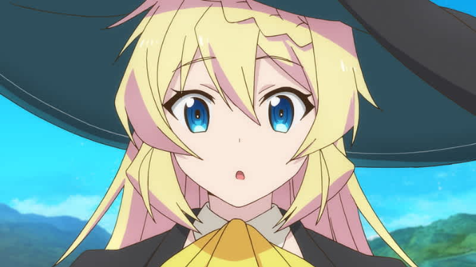
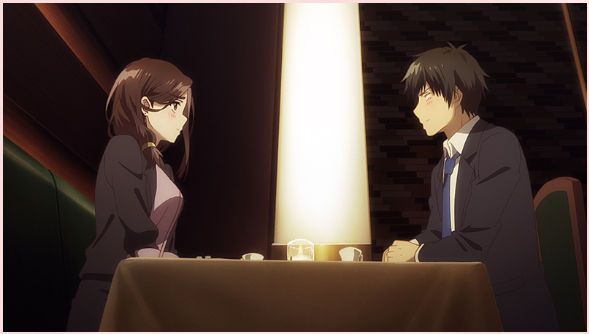

Anime Favorit Non Sequel yang Gw Suka di Musim Spring 2021
Slime Taoshite 300-nen, Shiranai Uchi ni Level MAX ni Nattemashita

Menurut pengamatan gw, sinopsisnya seperti ini. Seorang pekerja
kantoran wanita meninggal akibat kerja berlebihan. Setelah itu, dia
bereinkarnasi ke suatu dunia fantasi. Wanita tersebut bernama Azusa.
Dia bereinkarnasi menjadi gadis penyihir berusia 17 tahun secara
permanen yang artinya tidak akan pernah tua.
Dia memiliki tujuan hidup di dunia barunya, yaitu melakukan slow
life atau hidup santai. Setelah mencapai level maks di usia 300
tahun, dia mulai mengalami banyak trouble akibat pencapaian level
maks-nya. Akankah Azusa bisa mengatasi trouble-trouble tersebut?
Alasan gw menyukai anime ini adalah karena ceritanya yang ringan.
Setiap episode kedatangan orang baru. Akan tetapi, orang baru
tersebut sering membawa masalah kepada karakter utamanya. Selain
itu, karakternya yang imut menjadi daya tarik anime ini. Cerita ini
tidak terlalu menampilkan konflik yang rumit dan bahkan kebanyakan
komedi di empat episode awal.
Anime ini sendiri menceritakan suatu unsur rasisme yang intinya
orang bukan berambut silver menjadi pengendali robot di garis depan.
Yahh, tp yg orang berambut silver hanya menjadi melakukan komando
saja dan menganggap orang non silver hanya bot semata. Namun, Lena
menganggap bahwa semuanya setara.
Gw suka anime ini tuh karena terdapat unsur "mecha". Yahh, selain
itu, konfliknya juga sangat menarik, bahkan terdapat unsur-unsur
misteri di dalamnya. Seperti "siapa sih lawan yang sesungguhnya"
atau "kenapa bisa ada rasisme seperti itu?".
Hige wo Soru, Soshite Joshikousei wo Hirou

Menurut pengamatan gw, Higehiro merupakan anime yang pas jika kalian
ingin mengamati gimana seseorang memperlakukan orang lain. Tokoh
utamanya sendiri bernama Yoshida, seorang om-om yang tertolak
cintanya oleh atasannya. Kemudian, dia tidak sengaja menerima siswi
SMA ke rumahnya.
Siswi SMA ini memiliki cara hidup dan harga diri yang rusak sehingga
tokoh utamanya berusaha memperbaiki cara hidupnya. Nahh, cerita ini
berkutat diantara om-om bernama Yoshida dan siswi SMA bernama Sayu.
Alasan gw menyukai anime ini tentunya karena sepupu gw menyukainya
juga. Ehemm, mungkin selain itu, di sini terdapat petikan hikmah
yang bisa diambil agar membuat hidup kita semakin lebih baik.